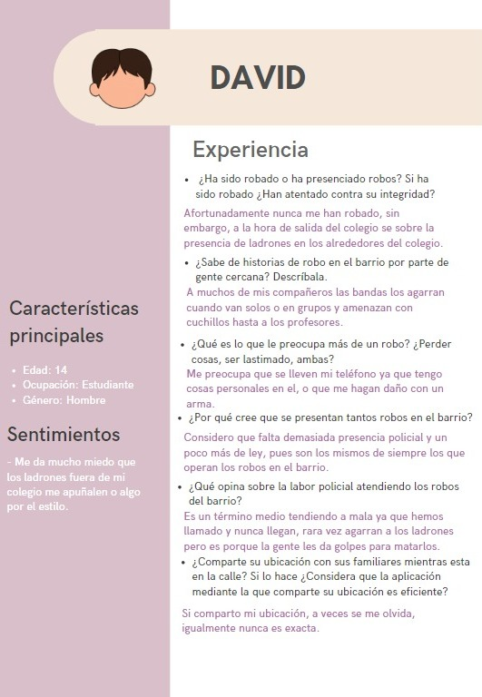
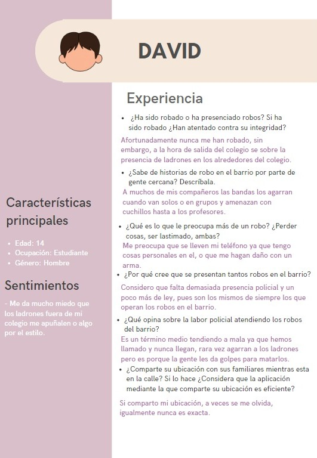

.png)
¿Cómo podríamos prevenir los robos en el barrio Colina y la violencia que estos producen?
¡Estamos aquí para ayudarte! A lo largo de los años, la inseguridad en el barrio de colina ha aumentado drásticamente, desde robos, estafas y más, conoce más acerca de esta situación y mantente informado para tu seguridad
¡Hola! Somos un equipo de estudiantes de primer semestre de Ingeniería Informática en la Universidad de La Sabana, apasionados por la tecnología y la innovación. Nosotros somos:
Juntos, estamos comprometidos en aprender y crecer en el campo de la informática mientras colaboramos en proyectos emocionantes y desafiantes. ¡Bienvenido a nuestro espacio en la web!
¡Juntos contribuimos a una Colina más segura!
.png)
En términos de robos y estafas, no existe una demográfica específica. Los afectados son todos los residentes y transeúntes del barrio colina, sin discriminar por género, raza u ocupación, todos enfrentan la misma preocupación, su falta de seguridad.


.png)
Desde personas en el sector de seguridad, hasta aquellos que debido a la creciente inseguridad están al pendiente de esta situación, la comunidad se enfrenta a la problemática advirtiendo a los residentes y transeúntes del barrio colina, a como estar más protegidos o usando las herramientas que tienen a su dispocisión para hacer más llevadera esta situación
Elegimos a las personas en el sector de seguridad y a aquellas bien informadas, que han vivido en el barrio por un largo periodo de tiempo; ya que son los que se han enfrentado estas situaciones más personalmente y conocen lás causas, modalidades y consecuencias en las que se da la inseguridad.

 

El barrio Colina en Bogotá es una zona residencial y comercial que cuenta con una alta densidad poblacional. Conformado por diversas edificaciones, desde viviendas unifamiliares hasta complejos de apartamentos y centros comerciales, Colina es un área de gran actividad durante el día y la noche.
Las investigadoras Sofía y Celeste, residentes del barrio Colina, experimentan diariamente la inseguridad que prevalece en la zona. Los robos son una preocupación constante, evidenciados por incidentes reportados tanto en las áreas residenciales como comerciales.
Se eligió estudiar el barrio Colina debido a la necesidad de mejorar su seguridad en el futuro. Las experiencias personales de las investigadoras, sumadas a la alta incidencia de robos en el área, demuestran la urgencia de abordar este problema para garantizar la tranquilidad y el bienestar de los residentes.
La impresionante seguridad ciudadana y la baja tasa de delitos en Islandia sirven como fuente de inspiración para fortalecer la seguridad y reducir los robos en el sector de la colina en Bogotá. Su enfoque en la prevención del crimen y la colaboración comunitaria ofrece un modelo a seguir para implementar medidas efectivas y promover un entorno más seguro en Bogotá.
escogimos Islandia como lugar de inspiración para mejorar la seguridad en el sector de la colina en Bogotá debido a su enfoque proactivo en la prevención del crimen y la colaboración comunitaria. En Islandia, se fortalecen los lazos familiares, se promueven actividades recreativas y deportivas para jóvenes, y se implementan políticas gubernamentales que abordan las causas subyacentes del crimen, como el desempleo y el consumo de drogas. La colaboración entre vecinos, autoridades y organizaciones es clave para identificar y abordar problemas, promoviendo así un sentido de responsabilidad compartida en la seguridad pública.